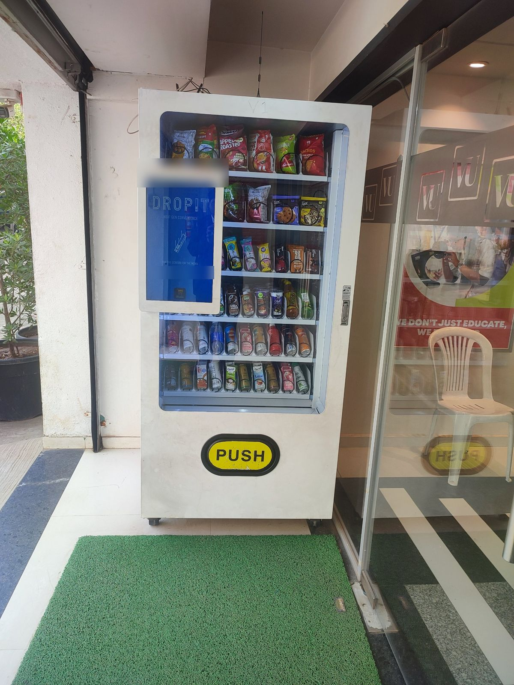

Smart vending machine
Touchscreen snack and drink machine.- Location
- Next to a building entrance
- Senses / controls
- Touch orders; dispenses items
- Data generated
- Orders, payments, stock
- Communication
- External antenna on top
- If it fails?
- Handwritten refund number